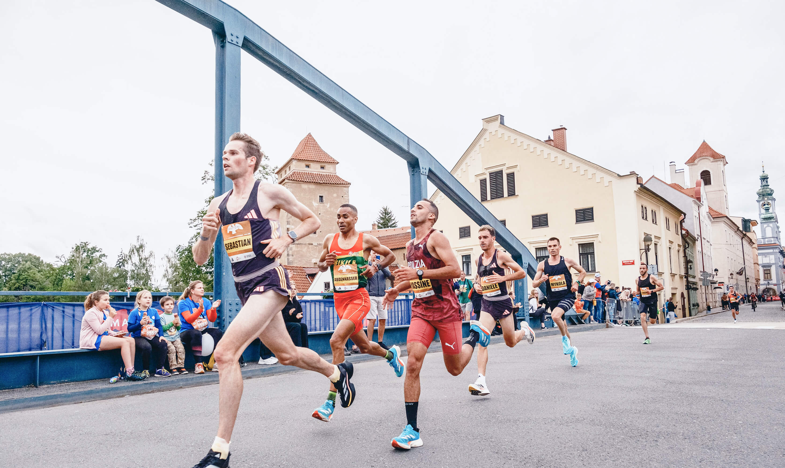
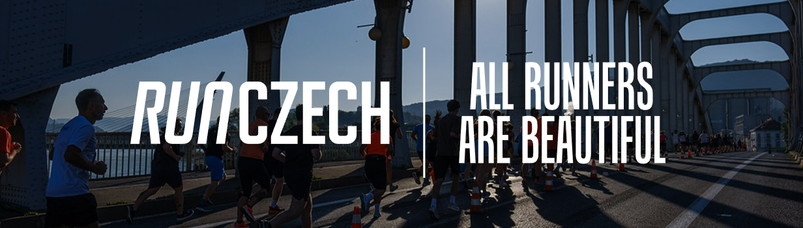
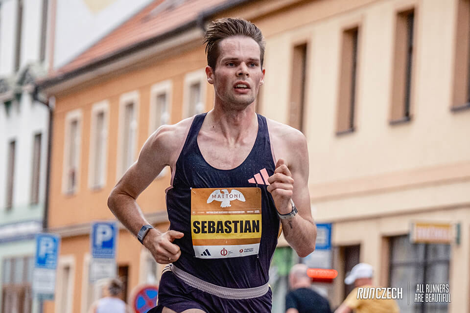
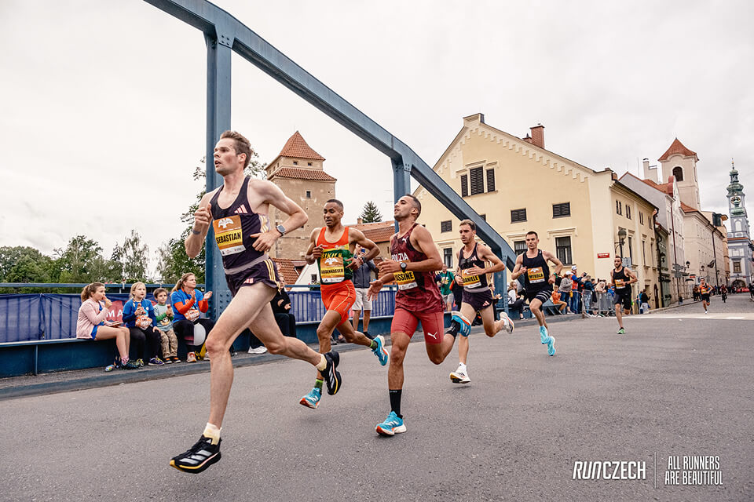
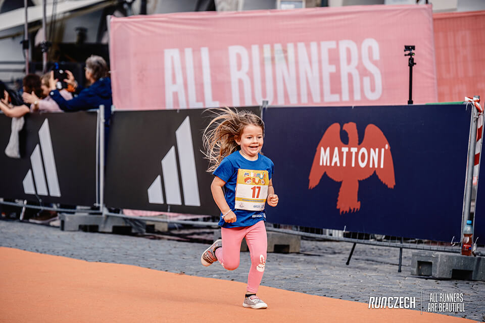
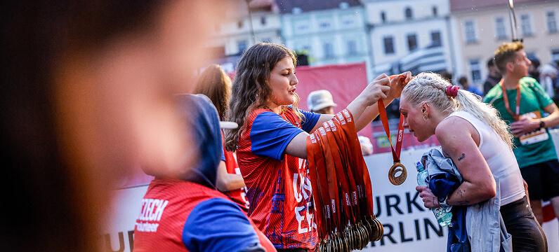
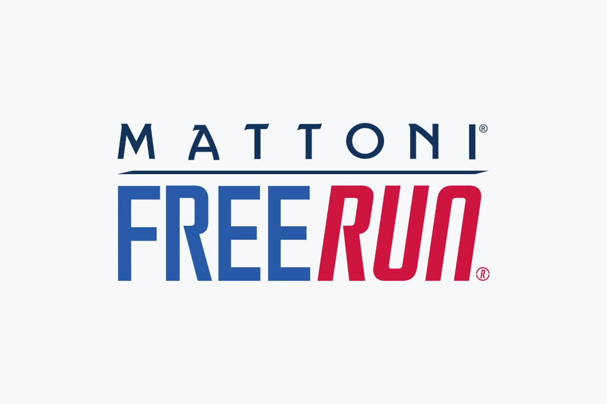
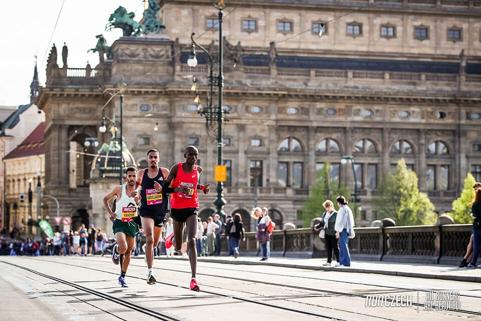
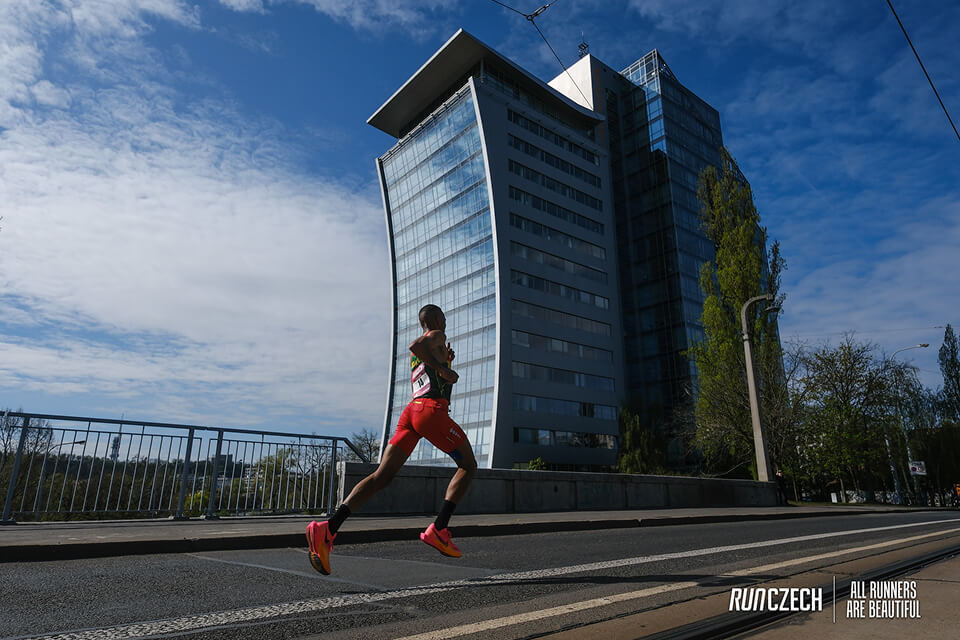

V Mattoni věříme, že pohyb a hydratace jdou ruku v ruce. Proto dlouhodobě podporujeme sportovní akce, profesionální i amatérské sportovce a motivujeme lidi k aktivnímu životnímu stylu.


Jsme hrdými partnery běžecké ligy RunCzech a titulárním partnerem regionálních půlmaratonů. Všichni milovníci běhu tak mohou díky nám při závodech svá těla zavodnit a obohatit je o tolik potřebný vápník, hořčík, draslík a sodík.
Registrovali jste se už na Running Festival? Stačí si vybrat, jestli poběžíte sami, s rodinou, nebo štafetu. Běháme po celý rok.




Chceme všechny Čechy naladit na zdravý životní styl a k němu patří pohyb a vyvážený příjem vody a minerálních látek. Přidejte se k nám do Mattoni FreeRun a dopřejte si ten nezapomenutelný pocit proběhnutí cílovou páskou!


